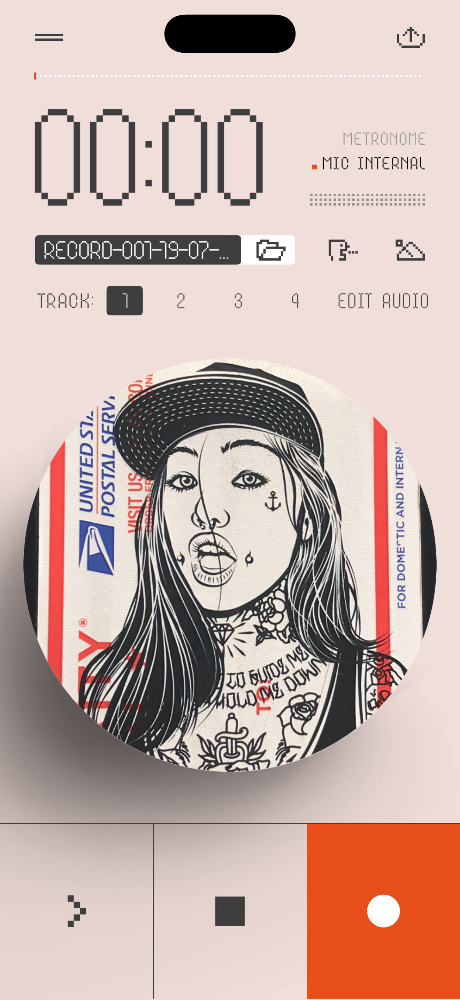
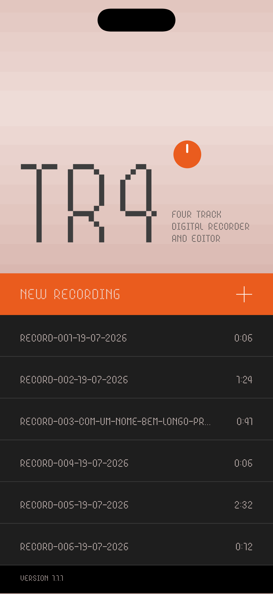
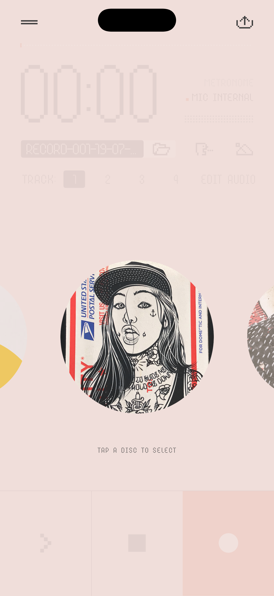

A pocket tape machine for iPhone. Spin the disc, scrub the tape, overdub four tracks — and let your groovebox drive the recording over USB.
iPhone · iOS 26 · free beta via TestFlight

Plug in over USB and TR4 recognizes the device, captures true stereo, and arms itself. Press play on the K.O. II — recording starts on the first sound. Stop the groove — the take ends, rewinds and re-arms for the next pass. Record groups A/B/C/D onto four tracks without ever touching your iPhone.

